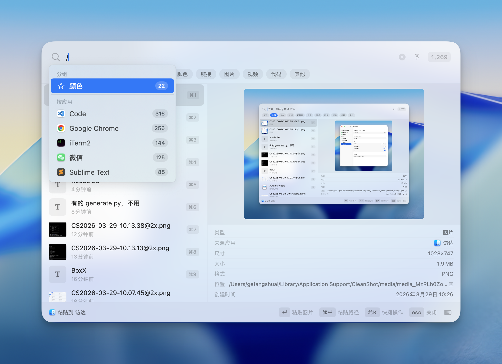
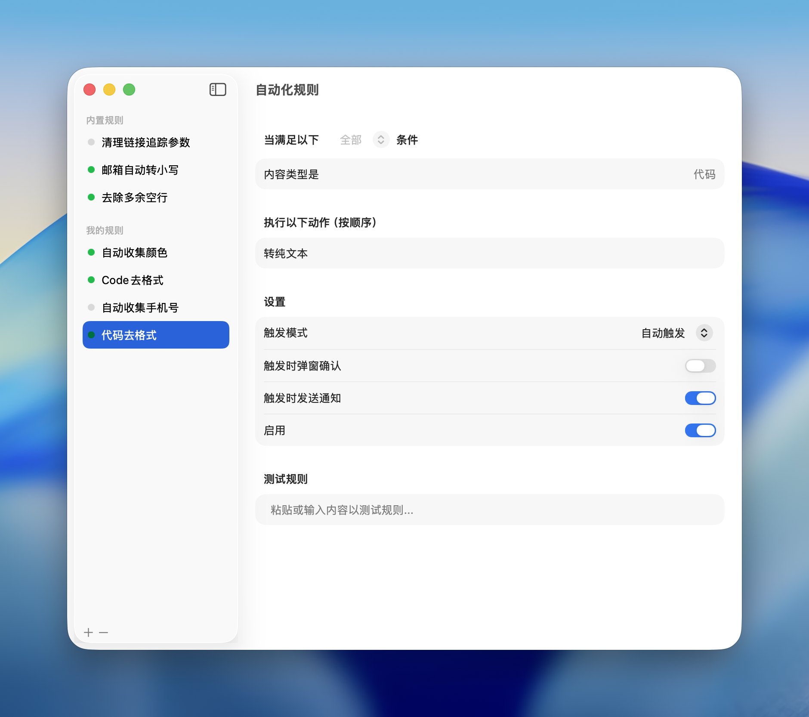
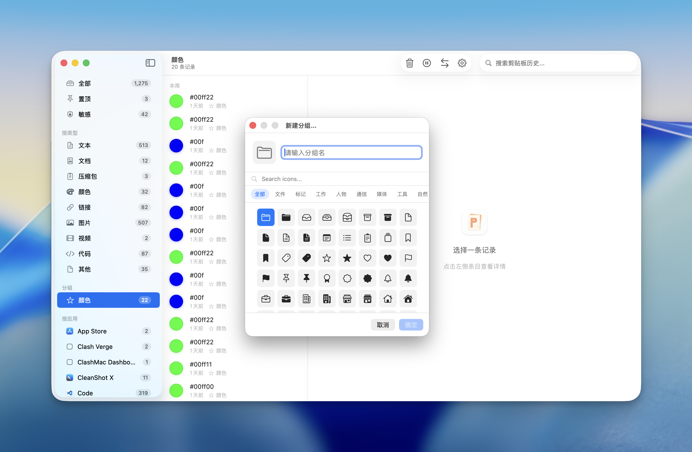

A lightweight, native macOS clipboard manager that lives in your menu bar. Capture everything you copy, find it instantly, paste it anywhere.
Or install via Homebrew:
brew tap lifedever/tap && brew install --cask pastememo



More than just paste — search, filter by app or group, type commands with /, paste as files, paste paths, and more. One shortcut opens a full-featured clipboard workstation.

Define rules with regex, content type, or source app conditions. Auto-execute actions like clean tracking URLs, assign to groups, mark sensitive, strip formatting — your clipboard works while you don't.

Create your own groups to organize clipboard history. Manually drag or let automation rules sort for you — colors, code snippets, links, each in its own place.
Paste copied text as a .txt file, paste screenshots as image files. Drag directly into Finder, file dialogs, or any app that accepts files.
Automatically detects content type — links with favicons, code snippets, colors, phone numbers, files — and shows intelligent previews.
Seamlessly paste images and files into AI terminals. Built for developers who live in the command line and AI workflows.
Paste file paths, filenames, save to folders, or paste-and-enter for terminal commands. Every clip becomes a multi-tool.
Zero network connections. Your clipboard data never leaves your Mac. No account, no cloud, no tracking.
Built with SwiftUI. Lives in your menu bar, never in the Dock. Minimal CPU and memory usage.
English, 简体中文, 繁體中文, 日本語, 한국어, Français, Deutsch, Español, Italiano, Русский, Bahasa Indonesia — switch anytime.
Press the shortcut to open Quick Paste panel from any app. Search, click, done.

Scan to join the beta testing WeChat group